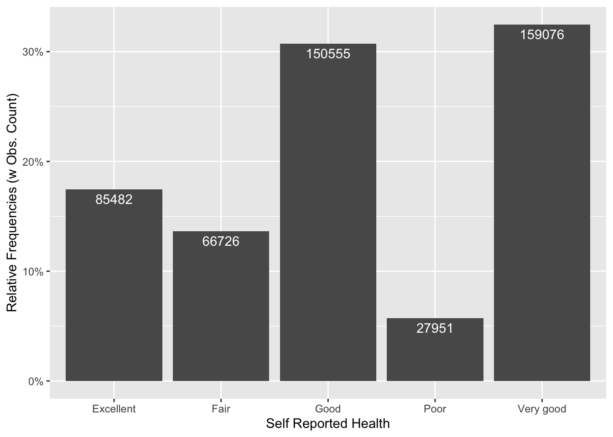
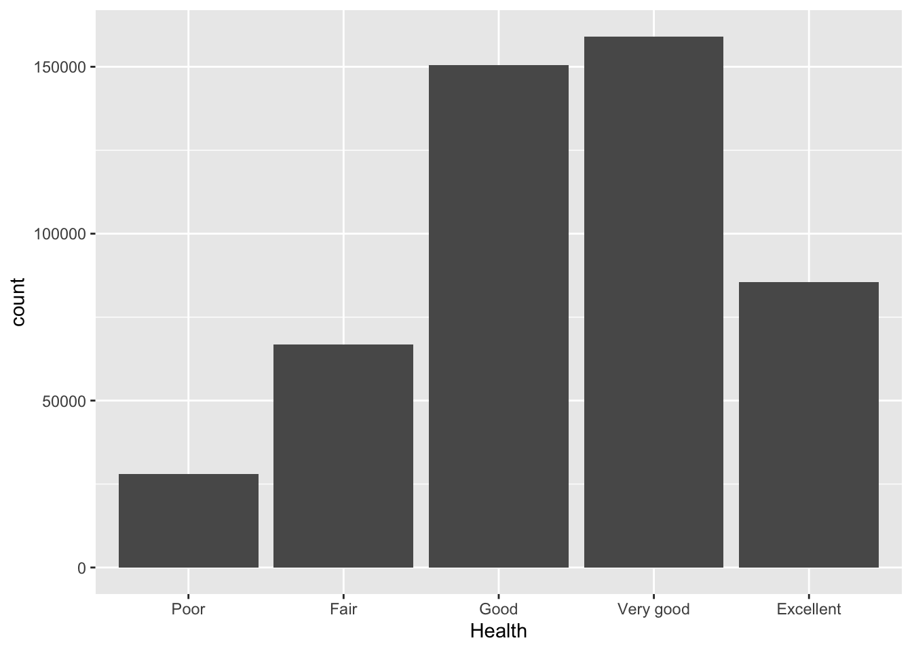
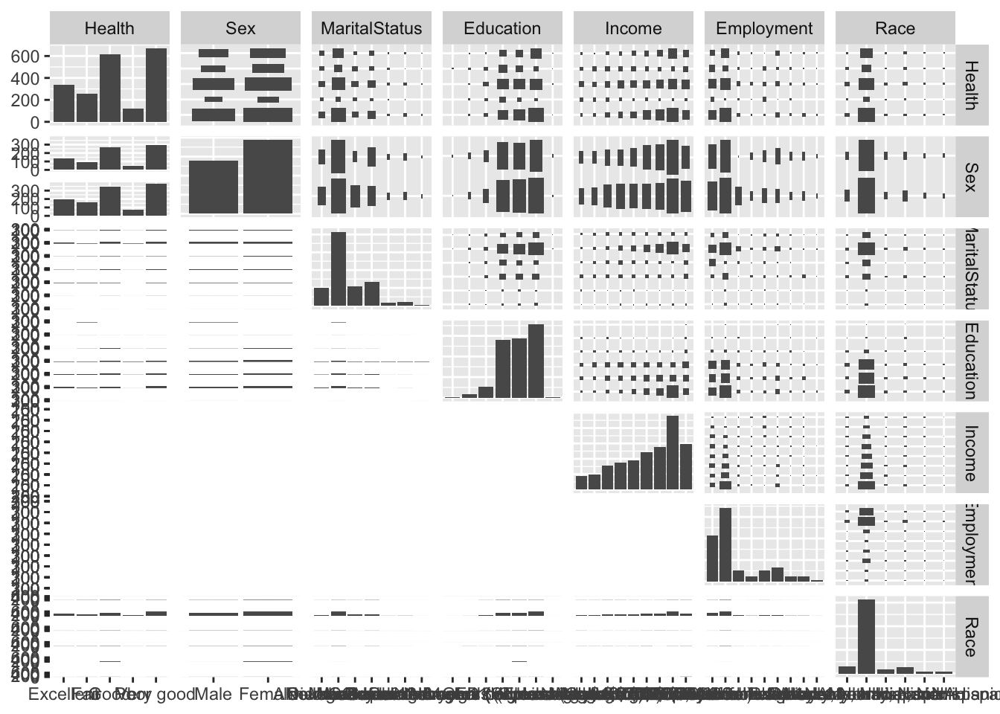

# Install required packages
library(conflicted)
conflict_prefer("filter", "dplyr", quiet = TRUE)
conflict_prefer("lag", "dplyr", quiet = TRUE)
suppressPackageStartupMessages(library(tidyverse))
# suppress "`summarise()` has grouped output by " messages
options(dplyr.summarise.inform = FALSE)32 Ordinal Logistic Regression
32.1 Introduction
So you’ve found yourself thinking about regression again, haven’t you? I can relate. At this point, you’re probably familiar with the fact that logistic regression means the logit (log odds) of a binary response is linearly related to the independent variable(s). Well, Proportional Odds Logistic Regression is an extension of Logistic Regression and that’s likely how you’ve found your way here – that, or you really, really enjoy the dark corners of the internet! Welcome, make yourself at home.
32.2 Mathematical Definition of Method
Now, let’s get down to business. Proportional Odds Logistic Regression (POLR), which is also known as Ordinal Logistic Regression, is a method of statistical analysis which may be used to model the relationship between an ordinal response, and one or more independent (or explanatory) variables. These explanatory variables may be categorical or continuous.
Let’s establish some context: Have you ever been filling out a survey and it’s asked you how much you agree with something, how often you do something, or how important something is to you? While this is not an extensive list, these Likert-type responses should give you a general idea of common ordinal responses you can expect to encounter when using POLR.
Some more specific examples where Ordinal Logistic Regression can be applied are:
Level of agreement: In a survey the responses to the outcome variable is categorized in multiple levels such as, Strongly Disagree, Disagree, Agree, Strongly Agree.
Satisfaction level: Measuring satisfaction level of a service on a scale like, “very dissatisfied,” “dissatisfied,” “neutral,” “satisfied,” and “very satisfied.”
Pain Intensity: Patients participating in medical research may be asked to rate the intensity of their pain on a scale ranging from “no pain” to “mild pain,” “moderate pain,” and “severe pain.”
32.3 Mathematical Formulation of an Ordinal Model
Well, you’ve probably reached the point where you’re about to check out because we see formulas, lots of them. This is understandable, but be not afraid! UCLA’s Advanced Research Computing Center is here to help in ways I cannot.
To start… let’s establish some notation and review the concepts involved in ordinal logistic regression. Let 𝑌 be an ordinal outcome with 𝐽 categories. Then 𝑃(𝑌≤𝑗) is the cumulative probability of 𝑌 less than or equal to a specific category 𝑗= 1,⋯,𝐽−1. Note that 𝑃(𝑌≤𝐽)=1. The odds of being less than or equal a particular category can be defined as
\[ \frac{P(Y \le j)}{P(Y>j)} \]
For 𝑗=1,⋯,𝐽−1 since 𝑃(𝑌>𝐽)=0 and dividing by zero is undefined. Alternatively, you can write 𝑃(𝑌>𝑗)=1–𝑃(𝑌≤𝑗). The log odds is also known as the logit, so that
\[ log \frac{P(Y \le j)}{P(Y>j)} = logit (P(Y \le j)) \]
The proportional odds logistic regression model can be defined as
\[logit (P(Y \le j)) = \beta_{j0} – \eta_{1}x_1 – \cdots – \eta_{p} x_p \]
I think that’s enough formulas for now. Let’s keep the party going by actually putting the pedal to the metal, or should we say, aPpLyiNg wHaT wE LeArNeD.
32.4 Data Source and Description
The data we will be using is the Behavioral Risk Factor Surveillance System (BRFSS) data from the year 2013. Why are we using this dataset? I thought you’d never ask! The BRFSS is the actually nation’s premier system of health-related telephone surveys that collect state data about U.S. residents regarding their health-related risk behaviors, chronic health conditions, and use of preventive services. Established in 1984 with 15 states, BRFSS now collects data in all 50 states as well as the District of Columbia and three U.S. territories.
BRFSS completes more than 400,000 adult interviews each year, making it the largest continuously conducted health survey system in the world. Impressive right? More information can be found here. The codebook for the 2013 data can be found here.
In this data, there is a variable called “General Health,” which has posed the following questions to participants: “Would you say that in general your health is…” — 1) Excellent 2) Very good 3) Good 4) Fair or 5) Poor. This is a great example of Likert scale responses mentioned earlier.
32.5 Cleaning the Data to Create a Model Frame
BRFSS_df1 <- read_csv("../data/05_brfss_subset.csv")All things considered, the original is a somewhat large dataset, with 330 variables and having taken Microsoft Excel 2013 about three minutes to load the original csv. Patience is key!
For this example, we are interested in the following variables:
Independent Variables:
- Participant ID
- Sex
- Race
- Marital Status
- Highest Level of Schooling Completed
Dependent Variable:
- General Health
The research question is straightforward: we want to know to what extent certain sociodemographic characteristics are associated with better self-reported health.
BRFSS_df2 <-
BRFSS_df1 %>%
as_tibble() %>%
drop_na(genhlth) %>%
mutate(
Health = factor(genhlth, ordered = TRUE),
Sex = factor(
sex,
levels = c("Male", "Female"),
labels = c("Male", "Female")
)
) %>%
mutate(Race = as_factor(X_racegr3)) %>%
mutate(MaritalStatus = as_factor(marital)) %>%
mutate(
Education = factor(
educa,
levels = c(
"Never attended school or only kindergarten",
"Grades 1 through 8 (Elementary)",
"Grades 9 though 11 (Some high school)",
"Grade 12 or GED (High school graduate)",
"College 1 year to 3 years (Some college or technical school)",
"College 4 years or more (College graduate)"
),
labels = c(
"Never attended school or only kindergarten",
"Grades 1 through 8 (Elementary)",
"Grades 9 through 11 (Some high school)",
"Grade 12 or GED (High school graduate)",
"College 1 year to 3 years (Some college or technical school)",
"College 4 years or more (College graduate)"
),
ordered = TRUE
)
) %>%
mutate(Employment = as_factor(employ1)) %>%
mutate(
Income = factor(
income2,
levels = c("Less than $10,000",
"Less than $15,000",
"Less than $20,000",
"Less than $25,000",
"Less than $35,000",
"Less than $50,000",
"Less than $75,000",
"$75,000 or more"),
labels = c("Less than $10,000",
"Less than $15,000",
"Less than $20,000",
"Less than $25,000",
"Less than $35,000",
"Less than $50,000",
"Less than $75,000",
"$75,000 or more"),
ordered = TRUE
)
) %>%
select(
"Health","Sex", "MaritalStatus", "Education", "Income", "Employment", "Race"
) 32.6 Assumptions of the Method
The key assumptions of Ordinal logistic Regression which ensures the validity of the model are as follows:
- The outcome variable is ordered.
- The predictor variables are either continuous, categorical, or ordinal.
- There is no multicollinearity among the predictors.
- Proportional odds.
In proportional odds logistic regression, the assumption is that the odds of being at or below any particular level of the ordinal dependent variable relative to being above that level is constant across levels of the independent variables. In other words, the relationship between the independent variables and the dependent variable is assumed to be proportional across all levels of the dependent variable. The model estimates coefficients for each independent variable, indicating how they influence the odds of being in a lower category versus a higher category of the ordinal dependent variable. The interpretation of these coefficients is similar to that in binary logistic regression, but applies to each threshold between categories of the ordinal dependent variable.
One of the assumptions underlying ordinal logistic (and ordinal probit) regression is that the relationship between each pair of outcome groups is the same. In other words, ordinal logistic regression assumes that the coefficients that describe the relationship between, say, the lowest versus all higher categories of the response variable are the same as those that describe the relationship between the next lowest category and all higher categories, etc. This is called the proportional odds assumption or the parallel regression assumption. Because the relationship between all pairs of groups is the same, there is only one set of coefficients.
32.7 Data Exploration
Lets take a look at the data we are working with.
# Skim Data
skim(BRFSS_df2)| Name | BRFSS_df2 |
| Number of rows | 489790 |
| Number of columns | 7 |
| _______________________ | |
| Column type frequency: | |
| factor | 7 |
| ________________________ | |
| Group variables | None |
Variable type: factor
| skim_variable | n_missing | complete_rate | ordered | n_unique | top_counts |
|---|---|---|---|---|---|
| Health | 0 | 1.00 | TRUE | 5 | Ver: 159076, Goo: 150555, Exc: 85482, Fai: 66726 |
| Sex | 2 | 1.00 | FALSE | 2 | Fem: 289319, Mal: 200469 |
| MaritalStatus | 3356 | 0.99 | FALSE | 6 | Mar: 252510, Nev: 74828, Div: 70053, Wid: 65322 |
| Education | 2228 | 1.00 | TRUE | 6 | Col: 169667, Gra: 142371, Col: 133740, Gra: 27905 |
| Income | 70870 | 0.86 | TRUE | 8 | $75: 115659, Les: 65102, Les: 61319, Les: 48687 |
| Employment | 3337 | 0.99 | FALSE | 8 | Emp: 201700, Ret: 137566, Sel: 39693, Una: 37135 |
| Race | 8472 | 0.98 | FALSE | 5 | Whi: 374955, Bla: 39121, His: 36823, Oth: 21337 |
BRFSS_df2 %>%
tbl_summary(by = Health) | Characteristic | Excellent, N = 85,4821 | Fair, N = 66,7261 | Good, N = 150,5551 | Poor, N = 27,9511 | Very good, N = 159,0761 |
|---|---|---|---|---|---|
| Sex | |||||
| Male | 35,741 (42%) | 25,882 (39%) | 62,998 (42%) | 10,713 (38%) | 65,135 (41%) |
| Female | 49,740 (58%) | 40,844 (61%) | 87,557 (58%) | 17,238 (62%) | 93,940 (59%) |
| Unknown | 1 | 0 | 0 | 0 | 1 |
| MaritalStatus | |||||
| Divorced | 10,049 (12%) | 12,402 (19%) | 21,736 (15%) | 6,528 (24%) | 19,338 (12%) |
| Married | 49,682 (59%) | 27,645 (42%) | 74,911 (50%) | 10,098 (36%) | 90,174 (57%) |
| Widowed | 7,007 (8.3%) | 12,744 (19%) | 21,933 (15%) | 6,148 (22%) | 17,490 (11%) |
| Never married | 14,419 (17%) | 9,295 (14%) | 23,398 (16%) | 3,179 (11%) | 24,537 (16%) |
| Separated | 1,221 (1.4%) | 2,438 (3.7%) | 3,366 (2.3%) | 1,287 (4.6%) | 2,280 (1.4%) |
| A member of an unmarried couple | 2,364 (2.8%) | 1,807 (2.7%) | 4,177 (2.8%) | 529 (1.9%) | 4,252 (2.7%) |
| Unknown | 740 | 395 | 1,034 | 182 | 1,005 |
| Education | |||||
| Never attended school or only kindergarten | 56 (<0.1%) | 199 (0.3%) | 201 (0.1%) | 118 (0.4%) | 82 (<0.1%) |
| Grades 1 through 8 (Elementary) | 900 (1.1%) | 4,383 (6.6%) | 3,972 (2.7%) | 2,516 (9.1%) | 1,452 (0.9%) |
| Grades 9 through 11 (Some high school) | 2,281 (2.7%) | 7,555 (11%) | 9,298 (6.2%) | 4,065 (15%) | 4,706 (3.0%) |
| Grade 12 or GED (High school graduate) | 17,552 (21%) | 24,614 (37%) | 50,213 (34%) | 10,175 (37%) | 39,817 (25%) |
| College 1 year to 3 years (Some college or technical school) | 21,347 (25%) | 17,642 (27%) | 42,828 (29%) | 7,061 (25%) | 44,862 (28%) |
| College 4 years or more (College graduate) | 42,912 (50%) | 11,997 (18%) | 43,324 (29%) | 3,853 (14%) | 67,581 (43%) |
| Unknown | 434 | 336 | 719 | 163 | 576 |
| Income | |||||
| Less than $10,000 | 2,319 (3.1%) | 6,929 (12%) | 7,515 (5.9%) | 4,513 (20%) | 3,976 (2.9%) |
| Less than $15,000 | 2,128 (2.9%) | 7,187 (13%) | 8,440 (6.6%) | 4,311 (19%) | 4,567 (3.3%) |
| Less than $20,000 | 3,551 (4.8%) | 8,053 (14%) | 11,948 (9.4%) | 3,674 (16%) | 7,479 (5.4%) |
| Less than $25,000 | 4,719 (6.4%) | 7,845 (14%) | 14,931 (12%) | 3,268 (14%) | 10,800 (7.8%) |
| Less than $35,000 | 6,521 (8.8%) | 7,564 (14%) | 17,287 (14%) | 2,575 (11%) | 14,740 (11%) |
| Less than $50,000 | 9,972 (13%) | 7,153 (13%) | 20,468 (16%) | 2,058 (8.9%) | 21,668 (16%) |
| Less than $75,000 | 12,701 (17%) | 5,226 (9.4%) | 19,710 (15%) | 1,421 (6.1%) | 26,044 (19%) |
| $75,000 or more | 32,343 (44%) | 5,645 (10%) | 27,402 (21%) | 1,296 (5.6%) | 48,973 (35%) |
| Unknown | 11,228 | 11,124 | 22,854 | 4,835 | 20,829 |
| Employment | |||||
| Retired | 17,110 (20%) | 23,602 (36%) | 46,701 (31%) | 8,937 (32%) | 41,216 (26%) |
| Employed for wages | 43,990 (52%) | 15,825 (24%) | 60,875 (41%) | 2,476 (8.9%) | 78,534 (50%) |
| A homemaker | 5,663 (6.7%) | 4,811 (7.3%) | 9,937 (6.7%) | 1,318 (4.8%) | 9,786 (6.2%) |
| Out of work for less than 1 year | 1,971 (2.3%) | 1,859 (2.8%) | 4,263 (2.9%) | 501 (1.8%) | 3,588 (2.3%) |
| Unable to work | 955 (1.1%) | 13,050 (20%) | 8,090 (5.4%) | 12,510 (45%) | 2,530 (1.6%) |
| Self-employed | 10,232 (12%) | 3,198 (4.8%) | 11,283 (7.6%) | 709 (2.6%) | 14,271 (9.0%) |
| Out of work for 1 year or more | 1,636 (1.9%) | 3,006 (4.5%) | 4,862 (3.3%) | 1,172 (4.2%) | 3,332 (2.1%) |
| A student | 3,291 (3.9%) | 861 (1.3%) | 3,400 (2.3%) | 124 (0.4%) | 4,978 (3.1%) |
| Unknown | 634 | 514 | 1,144 | 204 | 841 |
| Race | |||||
| Black only, Non-Hispanic | 5,089 (6.1%) | 7,830 (12%) | 13,843 (9.4%) | 2,865 (10%) | 9,494 (6.1%) |
| White only, Non-Hispanic | 68,211 (81%) | 44,948 (69%) | 110,669 (75%) | 19,972 (73%) | 131,155 (84%) |
| Other race only, Non-Hispanic | 3,804 (4.5%) | 2,843 (4.3%) | 7,475 (5.1%) | 1,295 (4.7%) | 5,920 (3.8%) |
| Hispanic | 5,496 (6.5%) | 8,377 (13%) | 12,778 (8.6%) | 2,407 (8.8%) | 7,765 (5.0%) |
| Multiracial, Non-Hispanic | 1,377 (1.6%) | 1,486 (2.3%) | 3,061 (2.1%) | 770 (2.8%) | 2,388 (1.5%) |
| Unknown | 1,505 | 1,242 | 2,729 | 642 | 2,354 |
| 1 n (%) | |||||
32.8 Plotting Outcome Variable
BRFSS_df2 %>%
count(Health) %>%
mutate(prop = n / sum(n)) %>%
rename(Health = Health) %>%
ggplot() +
aes(x = Health, y = prop) +
labs(
x = "Self Reported Health",
y = "Relative Frequencies (w Obs. Count)"
) +
scale_y_continuous(labels = scales::percent) +
geom_col() +
geom_text(aes(label = n), vjust = 1.5, color = "white")
# Reorder due to outcome variable being ordered
BRFSS_df2 %>%
ggplot(aes(x = fct_relevel(Health, c("Poor", "Fair", "Good", "Very good", "Excellent"))))+
geom_bar() +
labs(x = "Health")
# To plot this dataset, take a small sample (2000), due to it having a very large sample size
GGally::ggpairs(BRFSS_df2[sample(1:489790, size = 2000),])
BRFSS_df3 <-
BRFSS_df2 %>%
select(-Income, -Employment) %>%
mutate(
EducationLevel = case_when(
Education == "Never attended school or only kindergarten" ~ 1,
Education == "Grades 1 through 8 (Elementary)" ~ 1,
Education == "Grades 9 through 11 (Some high school)" ~ 1,
Education == "Grade 12 or GED (High school graduate)" ~ 2,
Education == "College 1 year to 3 years (Some college or technical school)" ~ 3,
Education == "College 4 years or more (College graduate)" ~ 4
)
) %>%
mutate(
EducationLevel = factor(
EducationLevel,
levels = 1:4,
labels = c(
"Less than HS", "HS/GED", "Some College", "College Grad"
),
ordered = TRUE
)
) %>%
select(-Education)At this point, we ought to consider the relationship between education, income, and employment, and whether or not it is best to choose one of these variables as a predictor, as opposed to all three. Considering a majority of the literature highlights education as one of the most important predictors of health, we will move forward with education only (out of the three aforementioned variables).
32.9 Fitting the Model
Using the polr function, we can fit the Proportional Odds Logistic Regression model to the data. By default, the Hess option is turned off, but you can turn it on if you’d like to be able to calculate the odds ratios later.
olr_fit <- MASS::polr(Health ~ ., data = BRFSS_df3, Hess = TRUE)The output is a bit messy, so it is wise to clean it up using the pander() function (from the pander:: and knitr:: packages).
Call: MASS::polr(formula = Health ~ ., data = BRFSS_df3, Hess = TRUE)
| Value | Std. Error | t value | |
|---|---|---|---|
| SexFemale | 0.01283 | 0.005411 | 2.372 |
| MaritalStatusMarried | 0.08766 | 0.007668 | 11.43 |
| MaritalStatusWidowed | 0.04205 | 0.009621 | 4.37 |
| MaritalStatusNever married | 0.04758 | 0.009511 | 5.003 |
| MaritalStatusSeparated | -0.01979 | 0.01806 | -1.096 |
| MaritalStatusA member of an unmarried couple | 0.07227 | 0.01727 | 4.186 |
| RaceWhite only, Non-Hispanic | 0.1817 | 0.009417 | 19.29 |
| RaceOther race only, Non-Hispanic | 0.01742 | 0.01504 | 1.158 |
| RaceHispanic | -0.1347 | 0.01267 | -10.63 |
| RaceMultiracial, Non-Hispanic | 0.03694 | 0.02036 | 1.814 |
| EducationLevel.L | 0.1511 | 0.006744 | 22.4 |
| EducationLevel.Q | -0.09438 | 0.005861 | -16.1 |
| EducationLevel.C | -0.005021 | 0.005036 | -0.997 |
| Value | Std. Error | t value | |
|---|---|---|---|
| Excellent|Fair | -1.338 | 0.0116 | -115.4 |
| Fair|Good | -0.5809 | 0.01139 | -51 |
| Good|Poor | 0.7042 | 0.01142 | 61.66 |
| Poor|Very good | 0.9546 | 0.01147 | 83.23 |
Residual Deviance: 1397152.94
AIC: 1397186.94
(12464 observations deleted due to missingness)
32.10 Interpreting the Regression Coefficients
Sex: Females were more likely than males to report higher self-reported health compared to males.
Race: Those who reported being white were significantly more likely to report better health when compared to black participants. Hispanics were more likely to report worse levels of health than those who were black. Those who reported being multiracial did not have a statistically significant difference from black participants.
Marital Status: Compared to being divorced, those who reported being married and never having been married had greater levels of self-reported health. There was no statistical difference between those who reported being divorced and those who reported being separated.
Education: The most notable statistically significant positive effect for greater self-reported health was present in the category where there was a change between those who fell under the category of having less than a high school education and having completed high school. For every increase in this particular educational category/level, the log odds of reporting a higher level of self-reported health increase by .15.
32.11 Generating P Values
Oftentimes, not having a p-value makes us itch with discomfort! One way to calculate a p-value here is by comparing the t-value against the standard normal distribution, like a z test. Note: this is only true with infinite degrees of freedom, but is reasonably approximated by large samples, becoming increasingly biased as sample size decreases.
It is an easy and straightforward process: store the coefficient table, then calculate the p-values and combine back with the table.
Value Std. Error
SexFemale 0.012833165 0.005410530
MaritalStatusMarried 0.087662642 0.007667744
MaritalStatusWidowed 0.042046687 0.009621344
MaritalStatusNever married 0.047583341 0.009511314
MaritalStatusSeparated -0.019790594 0.018055829
MaritalStatusA member of an unmarried couple 0.072266730 0.017265077
RaceWhite only, Non-Hispanic 0.181677664 0.009416588
RaceOther race only, Non-Hispanic 0.017416505 0.015044601
RaceHispanic -0.134730457 0.012668599
RaceMultiracial, Non-Hispanic 0.036936068 0.020360856
EducationLevel.L 0.151050979 0.006743830
EducationLevel.Q -0.094380889 0.005861344
EducationLevel.C -0.005021198 0.005036294
Excellent|Fair -1.338156462 0.011597785
Fair|Good -0.580928226 0.011391590
Good|Poor 0.704240760 0.011420730
Poor|Very good 0.954568453 0.011469520
t value
SexFemale 2.3718869
MaritalStatusMarried 11.4326505
MaritalStatusWidowed 4.3701469
MaritalStatusNever married 5.0028145
MaritalStatusSeparated -1.0960778
MaritalStatusA member of an unmarried couple 4.1857171
RaceWhite only, Non-Hispanic 19.2933651
RaceOther race only, Non-Hispanic 1.1576581
RaceHispanic -10.6349929
RaceMultiracial, Non-Hispanic 1.8140725
EducationLevel.L 22.3983971
EducationLevel.Q -16.1022602
EducationLevel.C -0.9970026
Excellent|Fair -115.3803424
Fair|Good -50.9962367
Good|Poor 61.6633742
Poor|Very good 83.2265402p <- pnorm(abs(ctable[, "t value"]), lower.tail = FALSE) * 2
eBeta <- exp(ctable[, "Value"])
# Combine Table
ctable <- cbind(ctable, "expBeta" = eBeta)
(ctable <- cbind(ctable, "p value" = p)) Value Std. Error
SexFemale 0.012833165 0.005410530
MaritalStatusMarried 0.087662642 0.007667744
MaritalStatusWidowed 0.042046687 0.009621344
MaritalStatusNever married 0.047583341 0.009511314
MaritalStatusSeparated -0.019790594 0.018055829
MaritalStatusA member of an unmarried couple 0.072266730 0.017265077
RaceWhite only, Non-Hispanic 0.181677664 0.009416588
RaceOther race only, Non-Hispanic 0.017416505 0.015044601
RaceHispanic -0.134730457 0.012668599
RaceMultiracial, Non-Hispanic 0.036936068 0.020360856
EducationLevel.L 0.151050979 0.006743830
EducationLevel.Q -0.094380889 0.005861344
EducationLevel.C -0.005021198 0.005036294
Excellent|Fair -1.338156462 0.011597785
Fair|Good -0.580928226 0.011391590
Good|Poor 0.704240760 0.011420730
Poor|Very good 0.954568453 0.011469520
t value expBeta
SexFemale 2.3718869 1.0129159
MaritalStatusMarried 11.4326505 1.0916198
MaritalStatusWidowed 4.3701469 1.0429432
MaritalStatusNever married 5.0028145 1.0487336
MaritalStatusSeparated -1.0960778 0.9804040
MaritalStatusA member of an unmarried couple 4.1857171 1.0749420
RaceWhite only, Non-Hispanic 19.2933651 1.1992276
RaceOther race only, Non-Hispanic 1.1576581 1.0175691
RaceHispanic -10.6349929 0.8739514
RaceMultiracial, Non-Hispanic 1.8140725 1.0376267
EducationLevel.L 22.3983971 1.1630559
EducationLevel.Q -16.1022602 0.9099361
EducationLevel.C -0.9970026 0.9949914
Excellent|Fair -115.3803424 0.2623288
Fair|Good -50.9962367 0.5593789
Good|Poor 61.6633742 2.0223107
Poor|Very good 83.2265402 2.5975494
p value
SexFemale 1.769751e-02
MaritalStatusMarried 2.872062e-30
MaritalStatusWidowed 1.241630e-05
MaritalStatusNever married 5.649930e-07
MaritalStatusSeparated 2.730447e-01
MaritalStatusA member of an unmarried couple 2.842672e-05
RaceWhite only, Non-Hispanic 6.106620e-83
RaceOther race only, Non-Hispanic 2.470036e-01
RaceHispanic 2.048444e-26
RaceMultiracial, Non-Hispanic 6.966656e-02
EducationLevel.L 4.079955e-111
EducationLevel.Q 2.459537e-58
EducationLevel.C 3.187632e-01
Excellent|Fair 0.000000e+00
Fair|Good 0.000000e+00
Good|Poor 0.000000e+00
Poor|Very good 0.000000e+0032.12 Conclusion
After running a statistical analysis consisting of an Ordinal Logistic Regression for a dataset including an ordered outcome variable of self-reported health, we are able to see that being female, white, and being married all indicated a greater likelihood of reporting higher levels of self-reported health. Additionally, certain changes in categories of education indicated greater odds of reporting greater self-reported health.